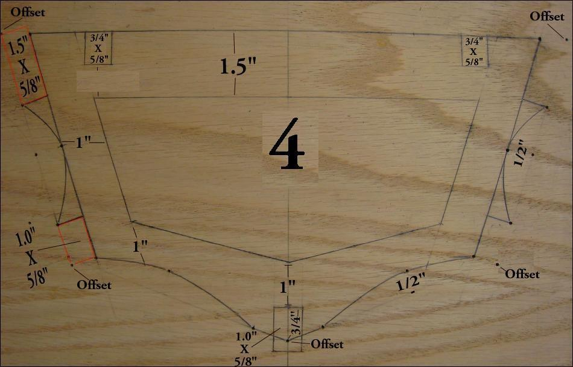

| Cross Sections | Menu Previous Page Next Page |
|

Offsets represent the outer most edge of the cross sections at the Gunwale, Chines, Keel, and deckridge. On an SOF kayak, the stringers must be taken into account as they must fit within the offset points. This requires that the stringers be recessed into the cross section as seen in the above pic. Note the original offset point and it's relationship to the stringers. Also note the amount (1/2" / 12.5mm) of concave drawn into the cross section to allow for the skin curvature caused by water pressure on the hull skin when in the water. This curvature also provides a solid base for the stringers.
|
|